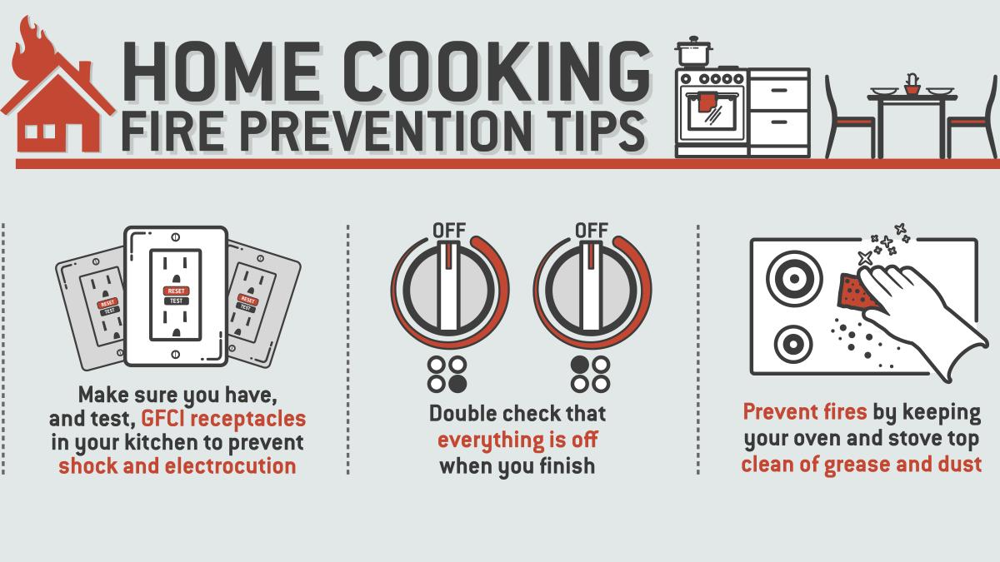
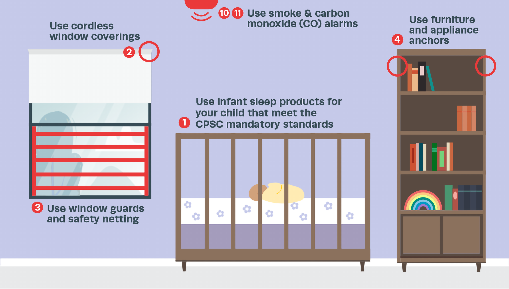
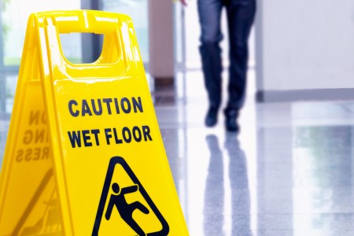
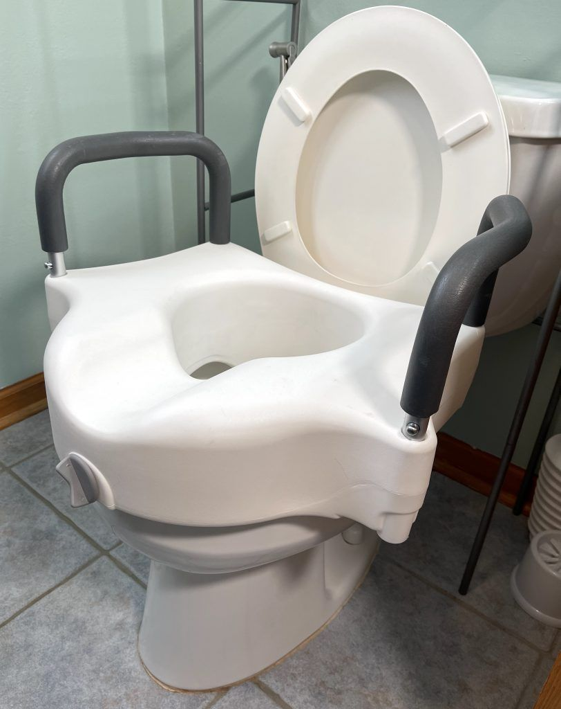
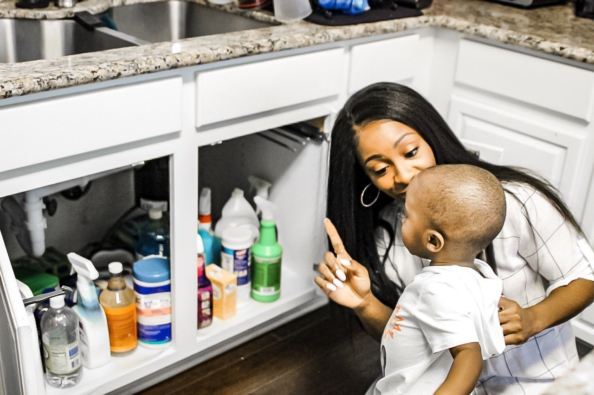
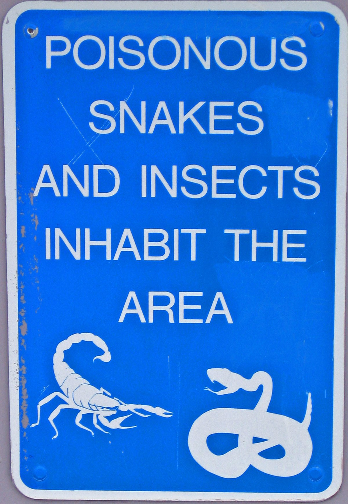
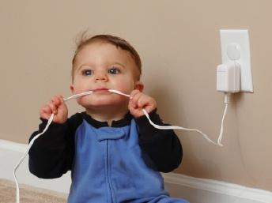
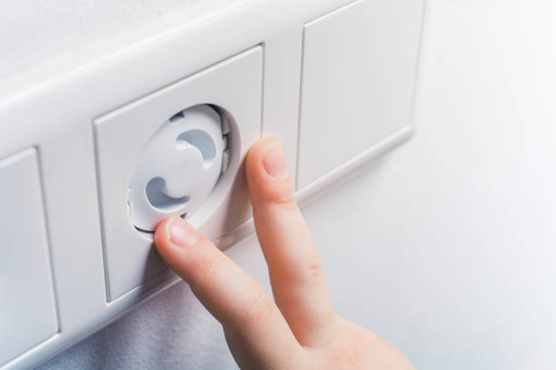
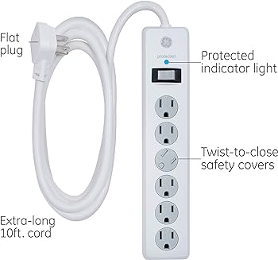

Fire Safety
Detailed instructions on choosing and maintaining smoke detectors
- Selection:
- Choose smoke detectors that meet the standards set by organizations like Underwriters Laboratories (UL).
- Opt for photoelectric or dual-sensor (photoelectric and ionization) detectors for broader detection capabilities
- Installation:
- Install detectors on every level of the home, including the basement and near sleeping areas.
- Follow the manufacturer's guidelines for placement, avoiding corners and high humidity areas.
- Maintenance:
- Test smoke detectors monthly by pressing the test button.
- Replace batteries at least once a year or as recommended by the manufacturer.
- Regularly clean detectors by gently vacuuming or wiping to prevent dust accumulation.
- Replacement:
- Replace smoke detectors every 10 years or as per the manufacturer's recommendation.

Step-by-step guide to creating a home fire escape plan, including templates
-
Draw a Map of Your Home
- Create a floor plan showing all rooms. Mark two exits from each room, including windows and doors.
-
Choose a Safe Meeting Spot
- Select a safe, easily locatable spot outside your home where everyone will meet after escaping.
-
Discuss and Practice the Plan
- Review the escape plan with everyone in the home. Practice it at least twice a year.
-
Special Considerations
- Consider infants, elderly, or family members with mobility issues.
- Ensure everyone can use escape routes and operate doors or windows.

Tips for safe cooking practices and handling electrical appliances
-
Safe Cooking Practices
- Never leave cooking unattended, particularly when using high heat or frying.
- Keep flammable items such as kitchen towels and paper away from the stove.
- Turn pot handles inward to prevent accidental spills or knocks.
-
Handling Electrical Appliances Safely
- Avoid using electrical appliances near water to prevent the risk of electric shocks.
- Regularly check appliance cords for signs of wear or damage.
- Unplug appliances when they are not in use to save energy and reduce fire hazards.
Real-life scenarios demonstrating the importance of fire safety measures
Let us look at these from a What if? perspective-
Kitchen Fire Scenario
- A family left cooking unattended, resulting in a grease fire that spread quickly. This incident stresses the importance of always monitoring cooking activities
-
Blocked Escape Routes Scenario
- In a house fire, a family struggled to escape due to clutter blocking exits, demonstrating why it's crucial to keep escape routes clear.
-
Non-Functioning Smoke Alarm Scenario
- A fatal house fire occurred where the smoke alarms were not operational, highlighting the life-saving importance of regular smoke alarm maintenance.
Child Safety
Comprehensive Guide to Childproofing Different Areas of the Home
- Kitchen:

- Secure cabinets and drawers to prevent access to dangerous items.
- Install safety locks on appliances.
- Bathroom:
- Use toilet locks to prevent drowning risks.
- Set water heater temperature to avoid scalding.
- Living Areas:
- Anchor heavy furniture and TVs to prevent tipping.
- Cover electrical outlets and secure cords.
Detailed Checklist for Securing Furniture and Electronics
- Furniture:
- Use anti-tip brackets and wall straps for heavy furniture.
- Ensure bookshelves and dressers are stable and secure.
- Electronics:
- Secure TVs with appropriate mounts.
- Keep cords out of reach and use cord covers.
Age-Specific Safety Tips for Children, from Infants to School-Aged Kids
- 
- Infants:
- Ensure cribs meet current safety standards.
- Keep small objects out of reach to prevent choking.
- Toddlers:
- Install gates at the top and bottom of stairs.
- Secure loose rugs and keep floors clear to prevent falls.
- School-Aged Children:
- Teach them about fire safety and emergency procedures.
- Ensure they understand the importance of keeping personal items away from younger siblings.
Interactive Section with Common Household Hazards and How to Mitigate Them
- Choking Hazards:
- Regularly check floors and low surfaces for small items.
- Avoid toys with small, detachable parts for young children.
- Fall Hazards:
- Use non-slip mats in the bathtub and on hard flooring.
- Keep staircases clear of toys and clutter.
Fall Prevention
Room-by-Room Guide to Preventing Falls
- Bathroom:
- Install grab bars in the shower and near the toilet.
- Use non-slip mats in the bathtub and on bathroom floors.
- Kitchen:
- Immediately clean up spills to prevent slipping.
- Ensure that rugs and mats have non-slip backings.

- Living Areas:
- Arrange furniture to create clear walking paths.
- Secure loose rugs and carpets to the floor.
- Stairs and Hallways:
- Install handrails on both sides of stairways.
- Ensure adequate lighting, especially at night.
General Tips for Fall Prevention
- Lighting:
- Use nightlights in hallways, bedrooms, and bathrooms.
- Replace burnt-out bulbs promptly to maintain good visibility.
- Footwear:
- Wear non-slip shoes or slippers, especially on hard floors.
- Avoid walking in socks or slippery footwear.
- Clutter:
- Regularly remove clutter from floors and staircases.
- Keep essential items within easy reach to avoid overstretching or bending.
Special Considerations for the Elderly and Those with Mobility Issues
- 
- Home Modifications:
- Consider installing stairlifts or home elevators for multi-story homes.
- Adjust furniture layout to accommodate mobility aids.
- Assistive Devices:
- Use walkers, canes, or wheelchairs as recommended by healthcare providers.
- Install raised toilet seats and shower seats if necessary.
- Regular Health Check-Ups:
- Regular vision and hearing checks to ensure sensory faculties are aiding in fall prevention.
- Discuss medication side effects that may affect balance with healthcare providers.
Poison Prevention
Identifying and Securing Common Household Toxins
- Medications:
- Store all medications, including over-the-counter drugs, in locked cabinets or containers, out of children's reach.
- Regularly dispose of expired or unused medications safely.
- Cleaning Products: 
- Keep cleaning agents, detergents, and bleaches in high cabinets or locked storage areas.
- Never transfer cleaning products to unmarked containers or bottles.
- Pesticides and Chemicals:
- Store lawn care products, automotive fluids, and other chemicals in secure, well-ventilated areas.
- Ensure these items are in their original containers with labels intact.
Prevention Strategies for Accidental Poisoning
- Safe Storage Practices:
- Always return products to safe storage immediately after use.
- Use child-resistant packaging whenever possible.
- Education and Awareness:
- 
- Educate family members about the dangers of certain household substances.
- Clearly label all hazardous materials and teach children to recognize warning labels.
- Emergency Preparedness:
- Keep emergency numbers, including Poison Control, easily accessible.
- Learn basic first aid for poisoning and ensure other family members know these procedures too.
Special Considerations for Homes with Children and Pets
- Childproofing:
- Install safety latches on cabinets containing harmful substances.
- Keep all dangerous products in their original packaging to avoid confusion.
- Pet Safety:
- Store pet medications separately from human medications.
- Be aware of houseplants and foods that may be toxic to pets.
Electrical Safety
Detailed Electrical Safety Tips
- 
- Managing Cords and Outlets:
- Avoid overloading electrical outlets with multiple adaptors or power strips.
- Regularly inspect cords for damage and replace frayed or worn cords immediately.
- Ensure cords are not placed under rugs or in high traffic areas to prevent tripping and wear.
- Use cord management solutions to keep cords organized and out of sight.
- Safe Appliance Use:
- Unplug small appliances when not in use, especially in areas prone to water exposure.
- Follow manufacturer guidelines for proper use and maintenance of appliances.
- Avoid using damaged or malfunctioning appliances until they have been properly repaired.
- Keep appliances away from wet surfaces and never touch them with wet hands.
- Water and Electricity:
- Keep electrical devices away from water to prevent shock hazards.
- Ensure that outlets near water sources are equipped with Ground Fault Circuit Interrupters (GFCIs).
- Regularly test GFCIs to ensure they are functioning properly.
- Avoid using extension cords in bathrooms or near sinks.
Childproofing Electrical Elements
- 
- Outlet Covers:
- Use safety covers on all accessible electrical outlets to prevent children from inserting objects.
- Choose tamper-resistant outlets for added safety in homes with small children.
- Securing Cords:
- Keep cords out of reach of children and avoid running them under carpets or across walkways.
- Use cord clips or wraps to secure loose cords along walls or behind furniture.
- Teaching Electrical Safety:
- Educate children about the dangers of electricity and the importance of not touching electrical appliances.
- Supervise young children around electrical devices and teach them to report damaged cords or outlets.
Preventing Electrical Fires
- 
- Surge Protectors:
- Use surge protectors to safeguard electronic devices from power surges and potential fires.
- Choose surge protectors with built-in overload protection for added safety.
- Regular Inspections:
- Have a qualified electrician inspect your home's electrical system periodically to ensure it meets safety standards.
- Look out for signs of electrical problems, such as frequent circuit breaker trips or flickering lights.
- Safe Heating Practices:
- Keep flammable materials away from space heaters and never leave heating equipment unattended.
- Use only heaters with automatic shut-off features and keep them away from combustible materials.
- Regularly clean and inspect heating devices for proper operation.
Home Safety Quiz
Test your knowledge with this fun and informative home safety quiz!
1. What is the recommended frequency for testing smoke detectors in your home?
- Once a year
- Every six months
- Every month
2. Where should you store household cleaning products to keep children safe?
- Under the kitchen sink
- In a high cabinet
- On the countertop
3. What is the most important thing to do to prevent falls at home?
- Wear comfortable shoes
- Keep floors clutter-free
- Dim the lights at night